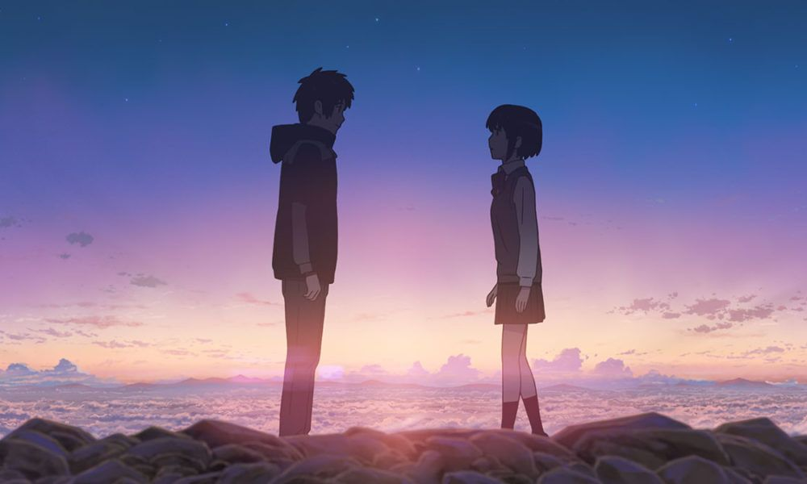
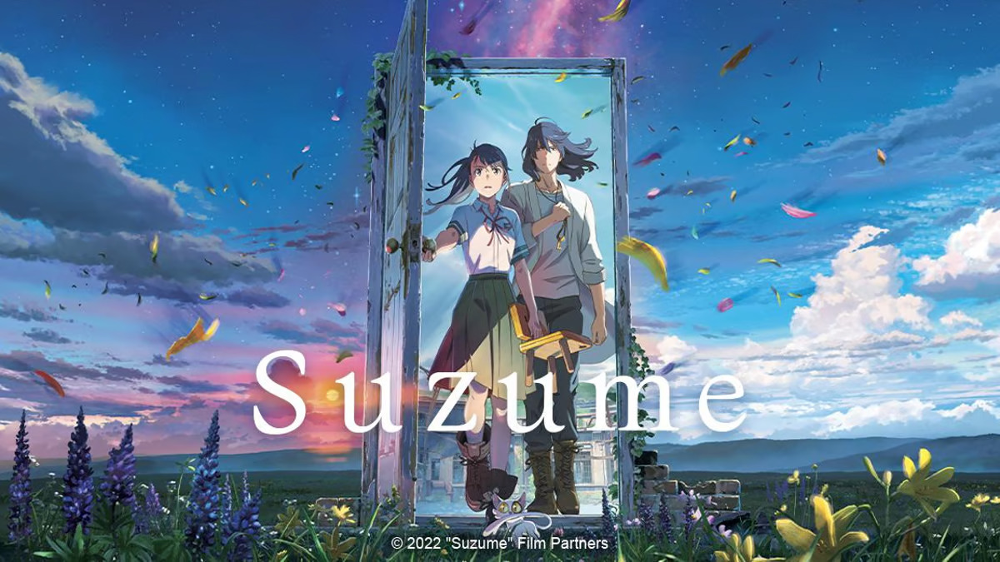
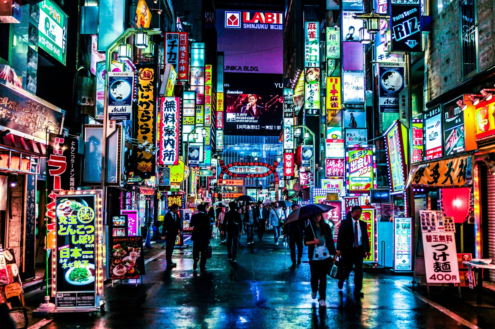

Shinkai Stories
Shinkai Stories Gallery
Your Name – Twilight Scene
A magical twilight moment where Taki and Mitsuha reach for each other, separated by time and space. The rich hues of orange and purple sky evoke a sense of longing and connection, emblematic of Shinkai’s exploration of fate and love.
Weathering With You – Hina Praying

Hina stands on a rooftop, hands clasped, as sunlight pierces through dark storm clouds. This scene beautifully symbolizes hope, sacrifice, and the fragile balance between human emotions and nature.
5 Centimeters per Second – Cherry Blossoms Falling

Delicate pink cherry blossoms cascade gently onto the ground at a train station. This image highlights Shinkai’s attention to the fleeting nature of life and love, set against a backdrop of quiet introspection.
The Garden of Words – Rain-Soaked Park

A lush green park drenched in rain, with shimmering reflections on the pavement. This serene scene showcases Shinkai’s mastery in capturing intimate, melancholic moments amidst natural beauty.
Suzume – The Mysterious Door
Suzume stands before a mystical door in a desolate field, surrounded by nature reclaiming abandoned spaces. The scene encapsulates adventure and mystery while exploring themes of loss and healing.
Skies and Weather – Vivid Sunset
A vibrant sunset with streaks of orange, pink, and blue, framed by dramatic clouds. Shinkai’s recurring motif of breathtaking skies serves as a metaphor for infinite possibilities and emotional depth.
Urban Landscape – Tokyo at Night
A bustling Tokyo street illuminated by neon lights and glowing shop signs. This vibrant depiction of urban life reflects Shinkai’s skill in blending realism with his signature cinematic aesthetic.
Symbolic Object – Red Ribbon from "Your Name"

A close-up of the red ribbon, intricately tied, symbolizing the bond between Taki and Mitsuha. The ribbon's vibrant color and delicate design represent destiny and the thread of connection.
Behind-the-Scenes – Shinkai at Work

A candid shot of Makoto Shinkai in his studio, surrounded by sketches and monitors. This glimpse into his creative process highlights his meticulous attention to detail and passion for storytelling.
References
- https://en.wikipedia.org/wiki/Makoto_Shinkai
- https://99designs.com/inspiration/logos/cool
- https://www.youtube.com/watch?v=pfHiwmknAcc
- https://www.youtube.com/watch?v=pX9WnvWT4dk
- https://makotoshinkai.fandom.com/wiki/Makoto_Shinkai
- https://features.japantimes.co.jp/makoto-shinkai-interview/
- https://www.swr.de/swrkultur/film-und-serie/makoto-shinkai-suzume-108.html
- https://www.local10.com/entertainment/2023/04/10/the-anime-hit-suzume-and-shinkais-cinema-of-cataclysm/